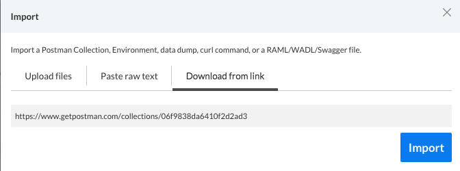
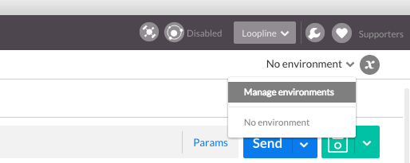
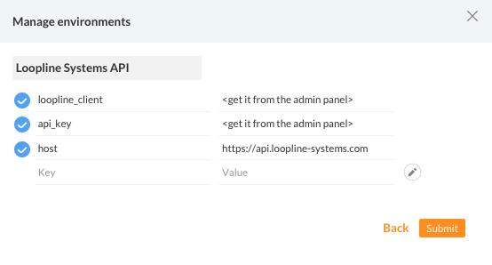

Loopline Systems API Documentation
Sandboxing with Postman
Postman is an extension for Chrome which makes it easy to create and send HTTP requests to a server. You can modify the HTTP method, headers and parameters.
First, install the Postman extension from the Chrome Webstore.
You will need to 2 things then, the collection itself and an environment set up.
Import the collection
You can either download the collection here and import it to Postman or import the collection directly. Paste the link into the "Download from link" section.
https://www.getpostman.com/collections/46cf79b02048e743c443

Import the environment file
Download the environment file and add it to Postman. 
Add your loopline_client value and api_key. You will get both from within the admin area in Loopline.

You can also create the environment by yourself. Because the collection uses placeholders you need to create an environment with three values:
- loopline_client: identifies your client (inside Loopline go to: Admin / API and integrations)
- api_key: authenticates your client (inside Loopline go to: Admin / API and integrations)
- host: the api endpoint, https://api.loopline-systems.com
If you set up the values correctly, you should have access to the provided requests.